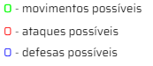

Regras do jogo
— Peças (Quantidade por jogador)
- Coroa (1)[Co]
- Espada (3)[Ep]
- Sabre Duplo (2)[Sd]
- Lança (2)[L]
- Alabarda (1)[A]
- Cajado (2)[Ca]
- Grimório (1)[G]
- Escudo (2)[Ec]
— Montando o tabuleiro
O tabuleiro tem um formato de quadrado de 7 casas por 7 casas, sem cada casa ocupada apenas por uma peça, com exceção do escudo, que é a única peça que pode compartilhar uma casa com outra peça*.

— Combate
A movimentação da peça é baseada em um sistema de ataque-movimento, primeiro realiza o ataque no alcance máximo da peça ou no alcance desejado pelo jogador e, somente depois, realiza a movimentação. Caso o ataque seja suficiente para derrotar a peça inimiga, a peça que realizou o ataque se desloca para a exata posição da peça derrotada, caso não seja o suficiente para a derrota, a peça atacante se desloca até a casa logo em frente da peça inimiga.
Ex: Lança versus Cajado com escudo

A Lança, como será mostrado na próxima seção, pode se mover 2 casas para frente ou 1 casa para o lado, e pode atacar até duas casas para frente, portanto, a Cajado + Escudo está no alcance da Lança.
A Lança tenta um ataque no Cajado + Escudo, mas por conta da regra do escudo, o Cajado permanece no lugar, e o escudo morre em seu lugar. Sabendo que não há ataque sem movimentação, a Lança precisa se deslocar até a posição mais próxima da casa onde ela atacou, ficando assim, na casa em frente ao Cajado. E essa regra do ataque-movimentação é aplicado para todas as peças, portanto, caso o ataque não mate a peça inimiga, a peça atacante deve parar em frente ou ao lado da casa atacada.

Ex: Lança versus Cajado

Neste caso, o Cajado não possui Escudo, então quando a Lança realiza o ataque, o Cajado é morto e a Lança avança para casa ocupada pelo Cajado.

Assim que o Cajado é morto, sua peça vai para a mão do jogar que a matou (jogabilidade melhor explicada posteriormente).
— Movimentações
Coroa
- Pode se deslocar para qualquer direção em apenas uma casa.
- Pode atacar em qualquer direção em apenas uma casa.

Espada
- Pode se deslocar apenas uma casa para frente ou para um dos lados ou uma para trás.
- Pode atacar apenas uma casa para frente.
Lança
- Pode se deslocar até 2 casas para frente ou 1 casa para um dos lados ou uma casa para trás.
- Pode atacar até 2 casas para frente. Caso haja duas peças uma atrás da outra. A lança só
consegue atacar a peça mais perto.
Não podendo atacar a peça de trás sem passar pela primeira.

Cajado
- Pode se deslocar em todas as direções em uma casa.
- Pode atacar em todas as direções em um arco ao entorno das casas de movimentação.
Não podendo atacar nas casas onde a peça pode se movimentar. (exemplificado na tabela abaixo)

Escudo
- Pode se deslocar em todas as direções.
- Não pode realizar ataque algum, mas pode se juntar a alguma outra peça e a proteger
— Condição de Derrota
Existem apenas 3 casos para ser declarado o fim do jogo.
-
Desistência
A qualquer momento do jogo após o primeiro movimento, um dos jogadores pode desistir da partida, causando assim sua derrota automaticamente.
-
Morte da Coroa
Durante a partida, se a Coroa receber um ataque que a elimine do tabuleiro, o jogador que perde a Coroa é considerado derrotado.
-
Perda de todas as peças
Durante a partida, se um jogador perder todas as peças do tabuleiro, exceto a Coroa, é considerado derrotado.
— Evolução das Peças
A condição para ocorrer uma evolução é possuir 3 peças iguais (é contabilizado da seguinte forma: uma peça no tabuleiro + 2 peças na mão do jogador). Ou chegando no final do tabuleiro do lado inimigo.
Para ganhar peças na mão, o jogador deve ir eliminando peças inimigas, ou sacrificar uma peça aliada usando o Grimório.
Quando um jogador possui 3 peças iguais, ele pode escolher quando evoluir uma peça, se assim o fizer, as 3 peças saem permanentemente da partida e a versão evoluída da peça entra na casa onde a peça que gasta na evolução estava. A evolução gasta uma jogada, ou seja, não poderá realizar nenhuma movimentação ou ataque antes ou depois da evolução.